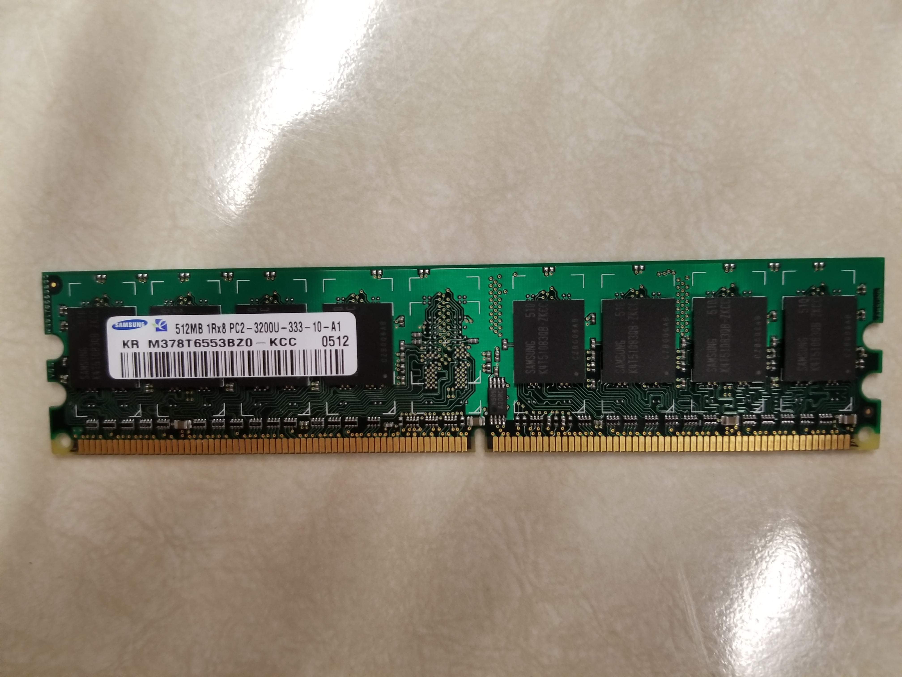

Parts
Mother Board
The mother board of the computer houses many components of the PC, including the CPU, RAM, connectors, IO, chips for various purposes, the graphics processor and more.

One of the components on the mother board is the CPU, or Central Processing Unit, which does simple calculations for programs that the computer wants to run. It can only do fairly simple calculations, but it does so many of them in one second that it heats up really quickly, which is why it needs it's very own cooling system. In the Image of the mother board above, we removed the cooling system in order to take off the mother board.

^^^Photo of the CPU^^^
Another notable component that resides on the mother board is Input/Output Panel. This small panel consists of many ports and connectors to communicate to other computers or machines like printers (even though some new printers can connect via wifi). The I/O system is vital to the computer, since without it the computer would not be able to display information or get input, let alone typing up and printing a document. Basically how the PC communicates.

^^^Photo of a small IO Panel consisting of an audio jack and two USB ports^^^
One other important and noticable component on the mother board are the memory slots, or the slots that store sticks of RAM. This is another very important part of the PC because it's short-term memory for the computer to focus on one task or program at the moment. It allows the computer to complete tasks, and basically lets the computer store memory for programs. 
^^^Photo of a stick of RAM^^^
Another important part of the computer is the Power Supply Unit. As the name suggests, this unit supplies power to...well, the PC. Without it you probably wouldn't be able to run the computer, or watch your favourite anime, etc., etc.

^^^Photo of Power Supply Unit^^^
A Hard Drive/Solid State Drive is another very important part of the PC. It stores Programs and information, basically everything the computer knows. But we don't have either of those in our computer. What we do have, though, is a floppy disk drive, which is basically the same thing (it also stores information such as games and text files).

^^^Photo of a Floppy Disk Drive^^^